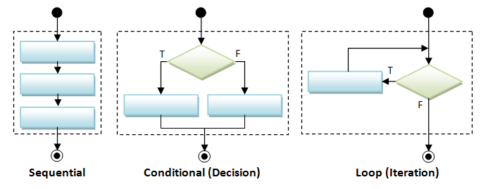
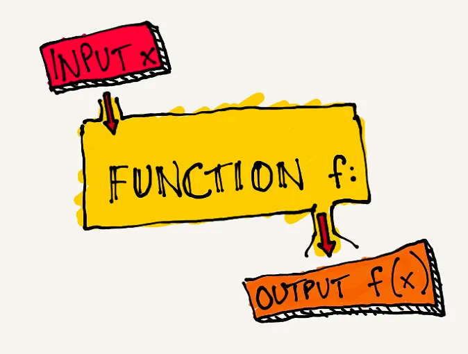

graph TD
A[Start] -->|Check Condition| B{Condition True?}
B -->|Yes| C[Execute True Block]
B -->|No| D[Execute False Block]
C --> E[End]
D --> E
R Programming
Agenda
- Flow Control in R
- Functions in R
- Apply Functions
- Exercises
Flow Control in R
Flow control in R allows you to specify different paths of code execution based on conditions and repetitive structures.
Conditional
Conditions in R control the flow of execution in your program. Based on these conditions, different blocks of code may be executed.

if Statement in R
The if statement in R allows you to execute different blocks of code based on a condition.
Conditional Flowchart
Nested if Statements
Nested if statements allow you to use an if statement inside another if statement.
Flowchart
graph TD
A[Start] -->|Check First Condition| B{First Condition True?}
B -->|Yes| C[Execute Nested If]
B -->|No| D[Execute Else Block of First If]
C -->|Check Second Condition| E{Second Condition True?}
E -->|Yes| F[Execute True Block of Second If]
E -->|No| G[Execute False Block of Second If]
F --> H[End]
G --> H
D --> H
Looping
The execution of a block of code repeatedly for a specified number of times or until a particular condition is met

Looping Flowchart
graph TD
A[Start] -->|Initialize Counter| B[For Loop]
B -->|Check Condition| C{Condition True?}
C -->|Yes| D[Execute Loop Body]
D -->|Increment Counter| B
C -->|No| E[End]
for Loop
The for loop in R is used to iterate over a sequence of numbers or the elements of a vector.
Example: Summing numbers in a sequence.
Explanation: The sum of numbers from \(1\) to \(5\) is calculated using a
forloop.
while Loops
The while loop in R repeatedly executes a block of code as long as a condition is true.
Example:
Explanation: This loop prints numbers 1 to 5.
The break Statement
Use
breakto exit a loop prematurely.Example:
Explanation: This loop also prints numbers 1 to 5, but exits using
break.
The next Statement
Use
nextto skip the rest of the loop and start the next iteration.Example:
Explanation: This loop prints numbers 1, 2, 4, and 5. Number 3 is skipped.
Functions in R
Functions in R are used to encapsulate code for reusability and modularity.
User-Defined Functions
User-defined functions in R allow you to create your own functions.
Syntax:
Example: Calculating the area of a rectangle.
Explanation: A function
calculate_area()is defined to calculate the area of a rectangle given its length and width.
The Apply Functions Family
Apply functions in R provide a concise and efficient way to apply a function to the elements of data structures such as vectors, lists, data frames, or matrix.
Apply Functions
Apply functions provide a concise way to apply a function to data.
| Function | Description | Usage | Example |
|---|---|---|---|
apply() |
Applies a function over the margins of an array or matrix. | apply(X, MARGIN, FUN, ...) |
apply(matrix(1:9, nrow = 3), 1, sum) |
lapply() |
Applies a function to each element of a list, returning a list. | lapply(X, FUN, ...) |
lapply(list(1:5, 6:10), sum) |
sapply() |
Similar to lapply(), but tries to simplify the result. |
sapply(X, FUN, ..., simplify = TRUE) |
sapply(list(1:5, 6:10), sum) |
Example: Apply Functions
Calculate summary statistics for a list of numeric vectors.
$a
[1] 1 2 3 4 5
$b
[1] 3 4 5 6 7
$c
[1] 10 11 12 13 14Exercises

Exercise 1: Grade Calculator
Write an R function
calculate_grade()to convert a numeric score to a letter grade.Example:
- Input:
calculate_grade(85) - Output:
"B"
- Input:
Solution
Exercise 2: Find Maximum
Without using the R built-in function
max(), write an R functionfind_max()to find the maximum in a numeric vector.Example:
- Input:
find_max(c(2,5,4,1,3)) - Output:
5
- Input:
Solution:
Explanation: The function iterates through the vector, keeping track of the maximum value found.
Exercise 3: Factorial using a for loop
The factorial of a non-negative integer \(n\), denoted as \(n!\), is the product of all positive integers less than or equal to \(n\). \[n!=n \times (n-1) \times \dots \times 1\]
Write an R function
factorial()to compute the factorial using aforloop.Example:
- Input:
factorial(5) - Output:
120
- Input:
Solution:
Exercise 4: Factorial using a while loop
Write an R function
factorial()to compute the factorial of using awhileloop.Example:
- Input:
factorial(5) - Output:
120
- Input:
Solution #1: (moving backward)
Solution #2: (moving forward)
Exercise 5: Loop Control
Skip even numbers and stop if number is greater than \(8\) in a loop from \(1\) to \(10\).
Solution:
Exercise 6: Printing a Pattern
Write an R function
print_pattern()to print the following pattern for a given number \(n\). The pattern consists of numbers where each row contains the same number, and the number of times it appears is equal to its row number.Example: for \(n = 5\), the pattern should look like this:
1 22 333 4444 55555Test your function with \(n = 5\) and \(n = 7\).
Solution: The solution involves using nested loops. The outer loop iterates through the numbers \(1\) to \(n\), and the inner loop prints the current number of the outer loop, as many times as the value of that number.
Exercise 7: Reverse Pyramid Pattern
Write an R function
print_reverse_pyramid()to print a reverse pyramid pattern for a given number \(n\).Example: for \(n = 5\), the pattern should look like this:
55555 4444 333 22 1Test your program with \(n = 5\) and \(n = 6\).
Solution #1: The solution involves using nested loops. The outer loop iterates through the numbers from \(n\) to \(1\), and the inner loops are used for printing spaces and the numbers.
print_reverse_pyramid = function(n) { for (i in n:1) { # Outer loop j = i while (j < n) { # Inner loop for the spaces cat(" ") j = j + 1 # print leading spaces } for (j in 1:i) { # Inner loop for the numbers cat(i) # print numbers } cat("\n") } } # Test the function with n = 5 print_reverse_pyramid(5)55555 4444 333 22 1666666 55555 4444 333 22 1Solution #2: Instead of the inner loops, we can use the
rep()function to generate the output